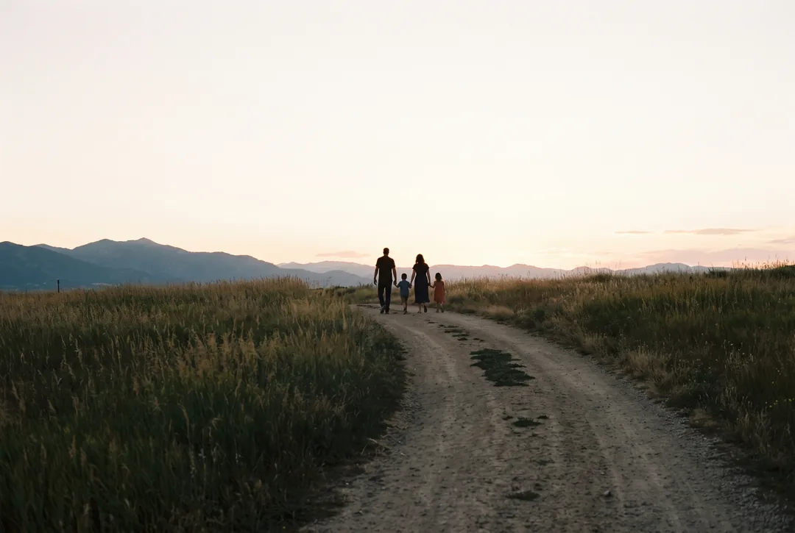

L’assurance qui survole la frontière
Vous vivez en France.
Vous travaillez en Suisse.
Vous êtes soigné des deux côtés.
La complémentaire santé des frontaliers, que vous soyez à la LAMal ou à la CMU. Un seul contrat vous couvre en Suisse comme en France. Elle est proposée par l’équipe de Flytel.
Dès 29 € par moisLe prix dépend de votre âge et de votre régime. Nous ne facturons pas de frais de dossier.
- Aucun questionnaire médical à remplir
- Des soins couverts en Suisse et en France
- Une adhésion en ligne en cinq minutes
Nos trois formules
affichent leur prix.
Un seul contrat vous propose trois niveaux de remboursement en France. En Suisse, votre quote-part et vos frais d’hospitalisation sont couverts dans les trois formules.
Essentiel
Alptis Santé Frontaliers Suisses · Niveau 2
En Suisse : quote-part et contribution journalière remboursées à 100 %soins urgents remboursés à 125 % BRSS
37,70 € par mois
Confort
La plus demandéeAlptis Santé Frontaliers Suisses · Niveau 3
En Suisse : quote-part et contribution journalière remboursées à 100 %, transport 50 € par an150 % BRSS et 20 € par acte
47,00 € par mois
Premium
Alptis Santé Frontaliers Suisses · Niveau 4
En Suisse : quote-part et contribution journalière remboursées à 100 %, transport 100 € par an200 % BRSS et 30 € par acte
57,90 € par mois
* Les tarifs 2026 sont indicatifs et s’entendent hors cotisation d’association, qui s’élève à 2 € par mois. Le contrat Alptis Santé Frontaliers Suisses, assuré par CNP Assurances, est réservé aux salariés frontaliers. En couple ou en famille, votre conjoint bénéficie d’une réduction de 10 %, et vos enfants d’une réduction de 50 % dès le 3e enfant. Voir tous les niveaux, le tableau des garanties et le simulateur.
Vous êtes couvert des deux côtés
de la frontière.
Un seul contrat vous suit d’un côté comme de l’autre : seule change la façon dont vous êtes remboursé en Suisse, selon votre régime.
Voici un exemple avec la formule Confort : choisissez votre régime pour voir ce qui change en Suisse.
- Votre quote-partLes 10 % qui restent à votre charge, jusqu’à 700 CHF par an100 %
- Votre contribution journalière à l’hôpital15 CHF par jour100 %
- Ostéopathe, psychologue…Quatre séances par an, en Suisse ou en France40 € par séance
- Urgences et hospitalisation en SuisseAvec votre carte européenne, en complément de la CPAM150 % BRSS
- Soins près de votre lieu de travailComplément de la CPAM, plus 20 € par acte150 % + 20 €
- Ostéopathe, psychologue…Quatre séances par an, en Suisse ou en France40 € par séance
- Consultations et spécialistesPraticiens OPTAM200 % BRSS
- HospitalisationFrais réels, chambre particulière à 50 € par jourCouverte
- Lunettes et dentaireVerres simples à 225 €, prothèses à 175 % BRSSInclus
- Carte Vitale et tiers payantRien à avancer chez la plupart des professionnelsInclus
En Suisse, vous réglez la facture et nous vous remboursons en euros. Tout comprendre : le guide LAMal ou CMU
Vous êtes couvert en trois étapes.
Étape 1 · Choisissezvotre formule
Vous hésitez entre Essentiel, Confort et Premium ? Notre simulateur vous conseille un niveau en cinq questions.
Étape 2 · Signezen ligne
Le parcours tient en cinq écrans, sans questionnaire médical ni rendez-vous, et vous n’avez aucun document à fournir avant de signer.
Étape 3 · Vous êtes couvertdes deux côtés
Votre couverture démarre dès le lendemain : vous bénéficiez du tiers payant en France, nous vous remboursons vos factures suisses en euros et nous résilions pour vous votre ancienne complémentaire santé.
Quatre questions se posent
avant de changer de complémentaire.
Un seul contrat couvre les deux régimes, y compris au sein d’une même famille. Si vous êtes à la LAMal, Alptis rembourse à 100 %, quel que soit le niveau, votre quote-part et votre contribution journalière hospitalière. La quote-part correspond aux 10 % des frais qui restent à votre charge au-delà de la franchise, dans la limite de 700 CHF par adulte et de 350 CHF par enfant et par an ; la contribution journalière s’élève à 15 CHF par jour. La franchise de 300 CHF et les séjours en division privée ou semi-privée ne sont jamais couverts.
Si vous êtes à la CMU, le contrat complète la CPAM sur les soins urgents en Suisse et sur les soins ambulatoires « en marge du travail », avec un forfait par acte à partir du niveau 3. En France, les garanties sont identiques pour les deux régimes : les affiliés à la LAMal disposent d’une carte Vitale grâce au formulaire S1.
Le guide LAMal ou CMUEn Suisse, c’est vous qui payez la facture (système du tiers garant). Votre caisse LAMal ou votre CPAM rembourse sa part, puis vous envoyez à Alptis la facture détaillée, le décompte original de votre régime et le reçu de paiement. Alptis rembourse en euros, au taux BCE du jour où vous avez payé, dans la limite de ce qui est resté à votre charge.
Il n’y a ni tiers payant ni prise en charge hospitalière en Suisse, quel que soit le niveau. En France, tiers payant et télétransmission Noémie fonctionnent normalement. L’équipe ALPICARE vous aide à constituer chaque dossier suisse.
Qui paie quoi en SuisseVous n’avez aucun délai d’attente sur la garantie de base et aucune formalité médicale à remplir, jusqu’à 67 ans inclus. Le contrat est réservé aux salariés frontaliers domiciliés en France (hors Corse et outre-mer) ; une attestation de votre employeur suffit. Il prend effet au plus tôt le lendemain de votre signature, après paiement de la première cotisation. Vous disposez ensuite de 14 jours pour y renoncer.
Seul le renfort Hospitalisation, en option aux niveaux 3 à 6, comporte un délai d’attente : 3 mois s’il est souscrit avec le contrat, 6 mois s’il est ajouté plus tard.
Le tableau des garantiesPour une complémentaire française de plus d’un an, la loi permet de résilier à tout moment, sans frais ; la demande peut être faite par votre nouvel assureur pour votre compte. Nous préparons cette demande avec vous et surveillons la date d’échéance, pour vous éviter un double paiement. Si votre contrat a moins d’un an, la résiliation intervient à son échéance.
Pour un contrat suisse (assurance complémentaire LCA), la règle est différente : résiliation à l’échéance annuelle, avec un préavis que nous vous indiquons. Le contrat Alptis lui-même est annuel, résiliable à tout moment après la première année avec un mois de préavis.
Les étapes de l’adhésion
Un seul contrat
pour les deux pays.
Les prix commencent à 29 € par mois, et vous adhérez en ligne, sans questionnaire médical.
Choisir ma formule